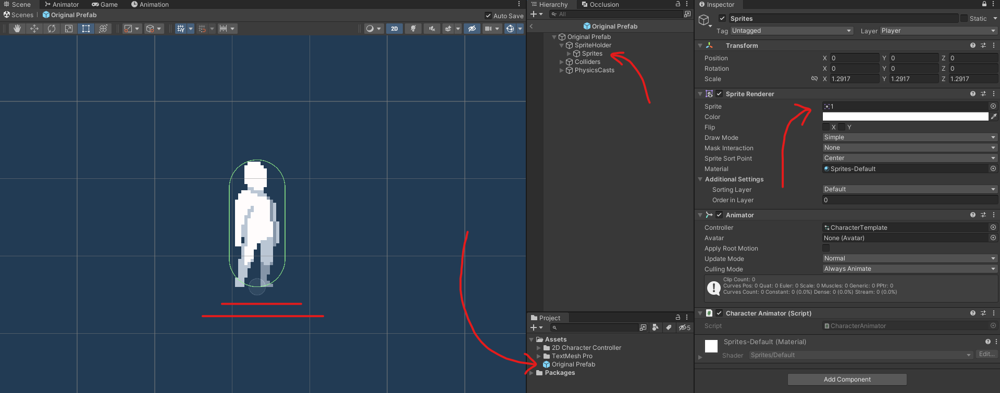
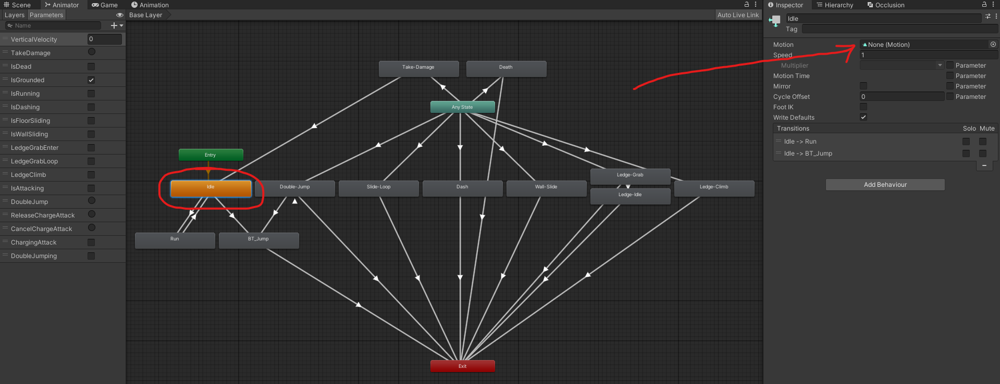
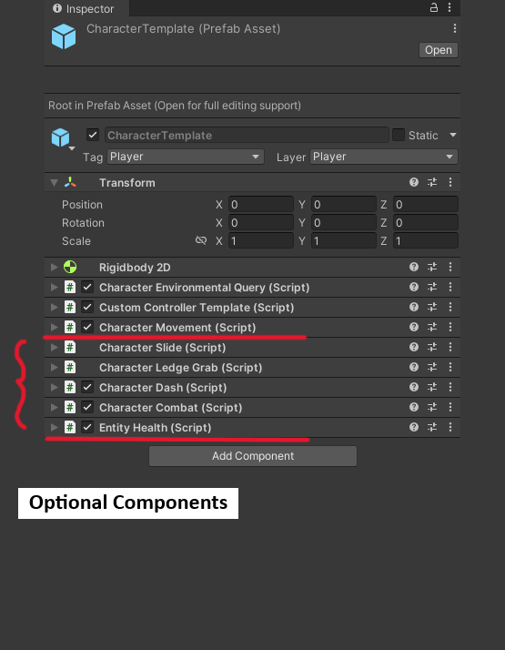

Character Object Setup
-
Importing the CharacterTemplate Prefab:
Begin by importing the CharacterTemplate prefab from the provided Getting Started folder. Drag and drop this prefab into your Unity scene to initiate setup. -
Assigning the Default Character Sprite:
Navigate to the SpriteRenderer component within the CharacterTemplate prefab. This component can be found under CharacterTemplate -> SpriteHolder -> Sprites. Here, select and reference your desired character sprite to serve as the default appearance of your character. -
Aligning Colliders:
Ensure that your selected sprite aligns properly with the character's colliders. You can find the colliders under CharacterTemplate -> Colliders -> Horizontal / Vertical. Specifically, focus on the Vertical collider as it should have no offset set in the X axis to ensure proper alignment. The Horizontal collider, on the other hand, generally does not require adjustment for alignment, but you may still review it for optimal positioning if needed.
Note: For more detailed information on the colliders and their usage, refer to CharacterEnvironmentalQuery.SetActiveCollider. -
Saving Your Character Prefab:
Once you've configured the visuals of your character to your satisfaction, save the object as an original prefab. This prefab will serve as the base character object within your project.

Character Animations Setup
Once you've prepared your character object, navigate to the Getting Started folder again, and
locate the CharacterTemplate animator controller. It's recommended to create a duplicate of this animator controller instead of directly editing
it, for easier management and to avoid accidental changes.
To integrate your preferred animations with the animator controller template, simply assign your desired animation clip to each animation
state within the controller. If you wish to exclude a particular animation state, it's advisable to leave it empty rather than removing
it altogether. This helps prevent errors or unintended behaviour.
Note: Within the animator controller, there's an animation state named BlendTree_OnAir. To assign animation clips to this state,
double-click it to access the blend tree configuration. Here, you can fill in the animation clips for the blend tree.
Important: Ensure that you reference the newly created animator controller to the animator component field of your character object. You
can find this field within the character object under CharacterTemplate -> SpriteHolder -> Sprites.

Mechanics Setup
With the character object now set up, you have the flexibility to customize it according to your preferences. The provided CharacterTemplate prefab comes
pre-equipped with all components included in the asset, such as the locomotion system and the combat system.
Optional Enhancements:
The prefab is designed to function seamlessly with additional optional components. These include:
- CharacterSlide: Enables sliding mechanics.
- CharacterLedgeGrab: Facilitates ledge-grabbing abilities.
- CharacterDash: Introduces dash maneuvers.
- CharacterCombat: Integrates combat functionalities.
- EntityHealth: Manages the character's health system.
Simplified Configuration:
If you prefer a simpler setup, you can remove the previously mentioned optional components. However, note that the core functionalities remain intact with the following components:
- CharacterMovement: Provides basic movement controls.
- HumanoidController: Manages humanoid character behaviours.
- CharacterEnvironmentalQuery: Facilitates environmental interactions.
Feel free to customize your character by adding or removing components based on your project requirements and desired gameplay mechanics.
